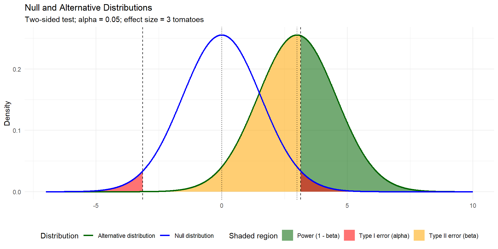
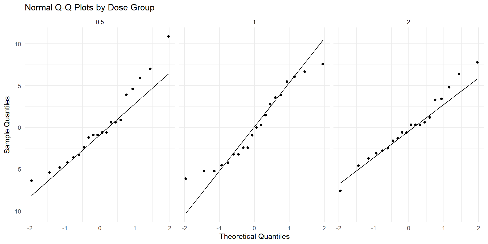
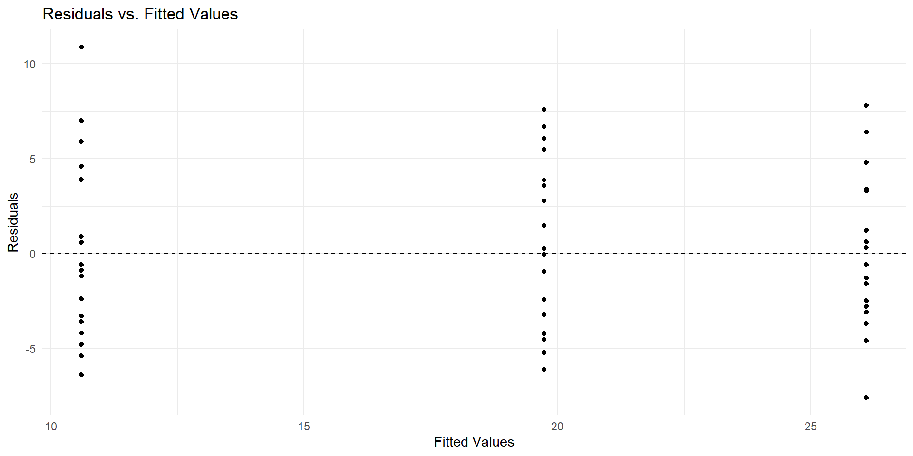

Df Sum Sq Mean Sq F value Pr(>F)
group 2 3.766 1.8832 4.846 0.0159 *
Residuals 27 10.492 0.3886
---
Signif. codes: 0 '***' 0.001 '**' 0.01 '*' 0.05 '.' 0.1 ' ' 1Finish FamilyWise Error Rate Corrections
Review
2026-10-27
Checklist
– Don’t forget about the Statistics Experience (12-1)
– Exam-2 is on 10-29
> Cumulative with emphasis on unit-2
> Closed notes, bring a calculator you know how to use
– The formula sheet has been posted
– The how to study guide has been posted
Checklist
– Do you have questions about midterm-2?
– Let’s take a look at the formula sheet!
Warm up
Last time:
Results from an experiment to compare yields as measured by dried weight of plants) obtained under a control and two different treatment conditions. We are interested in seeing if the dried weight of plants is different across the three yields.
Results from an experiment to compare yields (as measured by dried weight of plants) obtained under a control and two different treatment conditions.
Anova
What does this tell us?
so which ones are different?
Pairwise comparisons
\(\frac{k(k-1)}{2}\)
\(\frac{3(3-1)}{2} = 3\)
We have three pairwise comparisons!
Familywise Error Rate
The family-wise error rate (FWER) is the probability of making AT LEAST one Type I error across a family of hypothesis tests.

\(FWER = 1 - (1-0.05)^3 \approx 0.143\)
Strategies
– Tukeys HSD
– Bonferonni
Tukeys HSD
Talk to me about it!
Tukeys HSD
Tukeys HSD implements an entirely different distribution than the t-distribution, to help us account for our multiple comparisons! That distribution is the studentized range distribution!
Tukey’s Honest Significant Difference (HSD) test is a post hoc test commonly used to assess the significance of differences between pairs of group means. Tukey HSD is often a follow up to one-way ANOVA, when the F-test has revealed the existence of a significant difference between some of the tested groups.
This correction makes sure that our collective type-1 error rate is \(\alpha\).
Other corrections: Bonferonni
Adjust \(\alpha\): \(\frac{\alpha}{m}\)
This makes it harder to reject, and re-calibrates your hypothesis test for multiple comparisons!
The \(\alpha\) (ex. 0.05) is the collective type I error rate across all the tests combined (called the family-wise error rate), not the rate for each individual test.
When to use which
Bonferroni: Adjust the significance level or p-values to account for multiple hypothesis tests.
Tukey: Use a procedure specifically designed for comparing all pairs of means.
Why
– Tukey’s HSD is generally more powerful (reject correctly) when testing every single pair of means.
– Bonferroni is more conservative, especially as the number of comparisons grows large. Bonferroni haveis designed to have more power if you are only testing a tiny, select number of specific comparisons rather than all possible pairs
Example
The uncorrected p-values can be seen below. Suppose we wanted to only look at the comparison of the control vs the other two treatments. A Bonferonni correction may be more appropriate! We would compare \(\frac{\alpha}{2}\) to the two p-values below.
Pairwise comparisons using t tests with pooled SD
data: PlantGrowth$weight and PlantGrowth$group
ctrl trt1
trt1 0.1944 -
trt2 0.0877 0.0045
P value adjustment method: none We now compare those two p-values vs an \(\alpha = 0.025\)!
Questions
Confidence Intervals
You can also calculate confidence intervals with Bonferonni if you would like!
Example: 3 groups
With 3 groups, there are
\(m = \binom{3}{2} = 3\)
pairwise comparisons. To obtain 95% familywise confidence:
\(\alpha^* = \frac{0.05}{3} = 0.0167\)
Each interval is therefore constructed at approximately 98.33% confidence, using a \(t^*\) critical value with \(0.0167/2\) in each tail.
This controls the familywise error rate to be 95%
Questions
Review!
– Errors & Power
– One-way ANOVA
– Chi-square
Errors & Power
Identify the appropriate slot for Type-1, Type-2, and Power
| \(H_o\) is True | \(H_o\) is False | |
|---|---|---|
| Reject \(H_o\) | ____________ | ____________ |
| Fail to Reject \(H_o\) | ____________ | _____________ |
Errors & Power
Identify the appropriate slot for Type-1, Type-2, and Power
| \(H_o\) is True | \(H_o\) is False | |
|---|---|---|
| Reject \(H_o\) | Type I Error | Power! |
| Fail to Reject \(H_o\) | ____________ | Type II Error |
Each of these are probabilities that depend on certain characteristics of our study.
Type-I Error
Probability that we reject \(H_o\) when \(H_o\) is actually true.
How do we calculate this probability?
Type-I Error
Probability that we reject \(H_o\) when \(H_o\) is actually true.
How do we calculate this probability?
\(\alpha\)
We set this!
– What are you comfortable with?
– What does your field consider acceptable?
Type-II Error and Power
We can’t calculate these probabilities without talking about an effect size.
What is an effect size?
Effect size
“what if” value…
A quantitative measure of the magnitude of a difference, relationship, or effect at the population.
“what if” the true effect size at the population level is ___. What would my power be?
Example
Researchers want to determine whether tomato plants grown with fertilizer produce a different average number of tomatoes than plants grown without fertilizer. Assume the conditions for a two-sample t-test are satisfied. Use a significance level of \(\alpha = 0.05\). Based on previous literature, a significant difference would be an average of 3 tomatoes.
| Summary statistic | Fertilizer | No fertilizer |
|---|---|---|
| Sample size (\(n\)) | 25 | 25 |
| Sample mean (\(\bar{x}\)) | 32 tomatoes | 27 tomatoes |
| Sample standard deviation (\(s\)) | 6 tomatoes | 5 tomatoes |
Tomatoes
Based on the context of the problem, what do we already know?
– Probability of a Type-1 error
– Probability of a Type-2 error
– Power
Tomatoes

Power and Type II
Probability of a Type-II error ~ 53.15%
Power ~ 46.85%
Why is power small? What could we do to increase power?
On the exam
For the homework, I had you actually calculate power/probability of a Type-II error with the help of software! This was to help improve your conceptual understanding of the material. You don’t have software for the exam.
– Know the definitions
– Know their relationships with each other
– Know their relationships with other aspects of the study
– Know the graph
… along with things like effect sizes, etc.
Questions
One-way ANOVA
For this study, each animal received one of three dose levels of vitamin C (0.5, 1, and 2 mg/day). The research was interested in seeing if the mean length of odontoblasts (cells responsible for tooth growth) differed based on the dose levels.
# A tibble: 3 × 3
dose mean sd
<dbl> <dbl> <dbl>
1 0.5 10.6 4.50
2 1 19.7 4.42
3 2 26.1 3.77\(Ho:\)
\(Ha:\)
What do we check?
… and why do we check it?
Assumptions
– Independence
– Normality (of residuals)
– Equal variance
Normality

Equal variance

F-statistic
And we calculate an F-statistic that “follows a F-distribution.” This is what I mean…
The F-distribution describes the possible values of the F-statistic we COULD obtain from random samples, assuming the null hypothesis is true and the model assumptions hold.
Although we only collect one sample, probability theory (hard math) tells us what the distribution of F-statistics would look like across all possible random samples. This gives us a reference distribution against which we can compare our observed F-statistic.
Anova
Df Sum Sq Mean Sq F value Pr(>F)
dose 2 2426 1213 67.42 9.53e-16 ***
Residuals 57 1026 18
---
Signif. codes: 0 '***' 0.001 '**' 0.01 '*' 0.05 '.' 0.1 ' ' 1What is this telling us? Are we justified for TukeysHSD?
TukeysHSD
Tukey multiple comparisons of means
95% family-wise confidence level
Fit: aov(formula = len ~ dose, data = ToothGrowth)
$dose
diff lwr upr p adj
1-0.5 9.130 5.901805 12.358195 0.00e+00
2-0.5 15.495 12.266805 18.723195 0.00e+00
2-1 6.365 3.136805 9.593195 4.25e-05TukeysHSD
– Why is Tukeys important?
– What do we mean by familywise error rate?
Familywise error rate
Familywise error rate is the probability of making at least one type-1 error… in the family of comparisons that we have. In this case, we have 3 comparisons. We know because k = 3 and
\(\frac{3(3-1)}{2}\) = 3
Without accounting for multiple comparisons, our familywise error rate would be much larger!
Questions
Chi-square
Chi-square test for independence
The scenario is whether preferred study method is associated with class year among college students.
Class_Year In_Person Online Group_Study
1 Freshman 35 25 40
2 Sophomore 28 32 30
3 Junior 22 28 35
4 Senior 30 20 25– Why is this chi-square?
– Why is this chi-square test for independence?
Independence
\(Ho:\)
\(Ha:\)
Independence
\(Ho:\) Class year and study type are independent at the population level
\(Ha:\) Class year and study type are dependent at the population level
Assumptions
What are they?
Assumptions
– Independence
– All expected counts > 5 or “average expected cell count is > 5.”
Expected counts
Expected Formula

This is on your formula sheet
Let’s do the test!

p-value
What would the p-value look like? Draw it!
Results
Pearson's Chi-squared test
data: study_table
X-squared = 6.1653, df = 6, p-value = 0.4049What does this tell us?
Chi-square goodness of fit test
How is goodness of fit different than a test for independence?
Chi-square goodness of fit test
One variable vs hypothesized (expected) values from a distribution!
Example
study_table[,1]
Maybe we were interested in seeing if there are an equal number of students in each grade. We could write this as:
\(Ho:\) - the observed counts/frequencies follow a uniform theoretical distribution. All 4 grades have an equal probability 1/4
\(Ha:\) - The observed frequencies do not follow the uniform distribution.
Assumptions
We check the same assumptions!
– Expected counts > 5; “average expected cell count is > 5.”
– Independence
Put expected counts are now calculated differently…
Expected counts
These are calculated as \(n*p_i\)
Where n is our sample size, and \(p_i\) is the probability for each group under the assumption of the null hypothesis
Expected vs Observed
35 vs (105*.25 = 26.25)
28 vs (105*.25 = 26.25)
22 vs (105*.25 = 26.25)
30 vs (105*.25 = 26.25)
Formal test
And the chi-square test statistic is calculated the same as before! However, the degrees of freedom for the distribution and different. We don’t have rows and columns. We estimate the degrees of freedom by k-1 = 4-1 = 3
Chi-squared test for given probabilities
data: observed
X-squared = 3.0174, df = 3, p-value = 0.389In Summary
Hypothesis testing
– Identify the scenario
– Set up \(Ho\) and \(Ha\)
– Check assumptions
– Calculate your test statistic
– Calculate p-value
– Talk about it